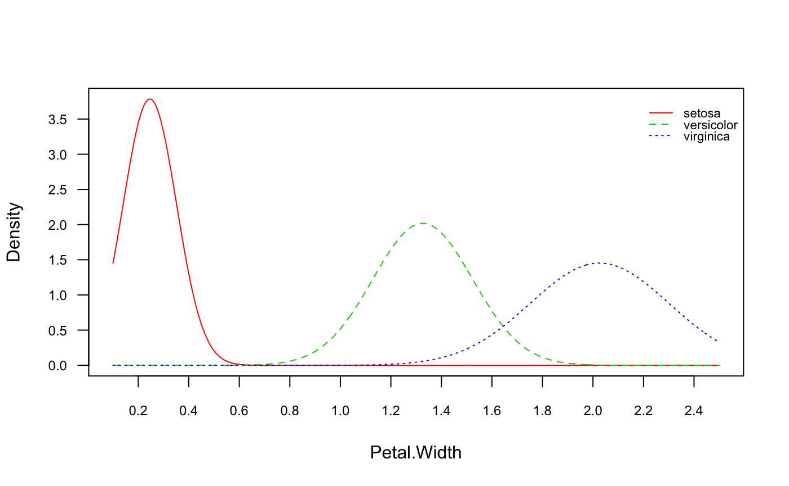
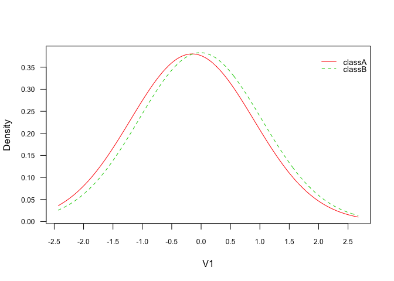
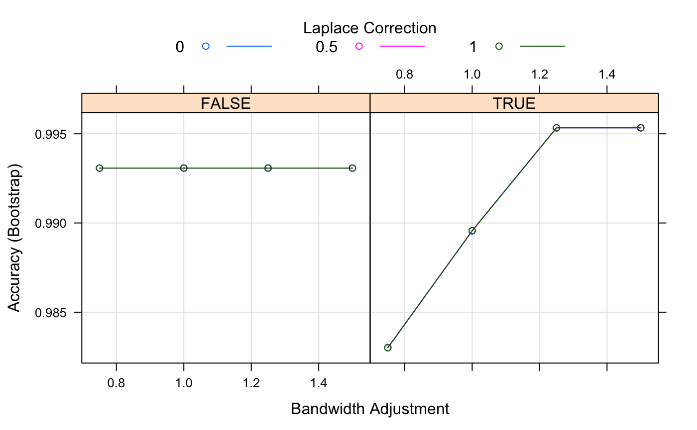

1. Overview
The naivebayes package provides an efficient implementation of the popular Naïve Bayes classifier in R. It was developed and is now maintained based on three principles: it should be efficient, user friendly and written in Base R. The last implies no dependencies, however, it neither denies nor interferes with being efficient as many functions from the Base R distribution use highly efficient routines programmed in lower level languages, such as C or FORTRAN. In fact, the naivebayes package utilizes only such functions for resource-intensive calculations.
The general function naive_bayes() detects the class of each feature in the dataset and, depending on the user choices, assumes possibly different distribution for each feature. It currently supports following class conditional distributions:
- categorical distribution for discrete features
- Poisson distribution for non-negative integers
- Gaussian distribution for continuous features
- non-parametrically estimated densities via Kernel Density Estimation for continuous features
In addition to that specialized functions are available which implement:
- Bernoulli Naive Bayes via
bernoulli_naive_bayes() - Multinomial Naive Bayes via
multinomial_naive_bayes() - Poisson Naive Bayes via
poisson_naive_bayes() - Gaussian Naive Bayes via
gaussian_naive_bayes() - Non-Parametric Naive Bayes via
nonparametric_naive_bayes()
They are implemented based on the linear algebra operations which makes them efficient on the dense matrices. In close future sparse matrices will be supported in order to boost the performance on the sparse data. Also few helper functions are provided that are supposed to improve the user experience. The general naive_bayes() function is also available through the excellent Caret package.
Extended documentation can be found on the website: https://majkamichal.github.io/naivebayes/
2. Installation
Just like many other R packages, naivebayes can be installed from the CRAN repository by simply executing in the console the following line:
3. Usage
The naivebayes package provides a user friendly implementation of the Naïve Bayes algorithm via formula interlace and classical combination of the matrix/data.frame containing the features and a vector with the class labels. All functions can recognize missing values, give an informative warning and more importantly - they can handle them. In following the basic usage of the naivebayes package is demonstrated:
library(naivebayes)
data(iris)
new <- iris[-c(1,2,3)]
# Add one categorical and count variable
set.seed(1)
new$Discrete <- sample(LETTERS[1:3], nrow(new), TRUE)
set.seed(1)
new$Counts <- c(rpois(50, 1), rpois(50, 2), rpois(50, 10))
# Formula interface
nb <- naive_bayes(Species ~ ., usepoisson = TRUE, data = new)
summary(nb)
#>
#> ================================ Naive Bayes =================================
#>
#> - Call: naive_bayes.formula(formula = Species ~ ., data = new, usepoisson = TRUE)
#> - Laplace: 0
#> - Classes: 3
#> - Samples: 150
#> - Features: 3
#> - Conditional distributions:
#> - Categorical: 1
#> - Poisson: 1
#> - Gaussian: 1
#> - Prior probabilities:
#> - setosa: 0.3333
#> - versicolor: 0.3333
#> - virginica: 0.3333
#>
#> ------------------------------------------------------------------------------
# Or equivalently matrix/data.frame and class vector
df <- new[-2]
class_vec <- new[[2]]
nb2 <- naive_bayes(x = df, y = class_vec, usepoisson = TRUE)
nb2
#>
#> ================================ Naive Bayes =================================
#>
#> Call:
#> naive_bayes.default(x = df, y = class_vec, usepoisson = TRUE)
#>
#> ------------------------------------------------------------------------------
#>
#> Laplace smoothing: 0
#>
#> ------------------------------------------------------------------------------
#>
#> A priori probabilities:
#>
#> setosa versicolor virginica
#> 0.3333333 0.3333333 0.3333333
#>
#> ------------------------------------------------------------------------------
#>
#> Tables:
#>
#> ------------------------------------------------------------------------------
#> ::: Petal.Width (Gaussian)
#> ------------------------------------------------------------------------------
#>
#> Petal.Width setosa versicolor virginica
#> mean 0.2460000 1.3260000 2.0260000
#> sd 0.1053856 0.1977527 0.2746501
#>
#> ------------------------------------------------------------------------------
#> ::: Discrete (Categorical)
#> ------------------------------------------------------------------------------
#>
#> Discrete setosa versicolor virginica
#> A 0.24 0.30 0.30
#> B 0.38 0.38 0.44
#> C 0.38 0.32 0.26
#>
#> ------------------------------------------------------------------------------
#> ::: Counts (Poisson)
#> ------------------------------------------------------------------------------
#>
#> setosa versicolor virginica
#> lambda 1.08 1.98 10.16
#>
#> ------------------------------------------------------------------------------
# Visualize class conditional probability distributions
plot(nb, which = c("Petal.Width", "Discrete"),
arg.cat = list(color = heat.colors(3)))
# Browse tables
tables(nb, which = "Discrete") # <=> nb$tables["Discrete"]
#>
#> ------------------------------------------------------------------------------
#> ::: Discrete (Categorical)
#> ------------------------------------------------------------------------------
#>
#> Discrete setosa versicolor virginica
#> A 0.24 0.30 0.30
#> B 0.38 0.38 0.44
#> C 0.38 0.32 0.26
#>
#> ------------------------------------------------------------------------------
# Get name of conditional distributions for each feature
get_cond_dist(nb) # <=> attr(nb$tables, "cond_dist")
#> Petal.Width Discrete Counts
#> "Gaussian" "Categorical" "Poisson"
# data.frame("Dist" = get_cond_dist(nb))
# Classification
head(predict(nb))
#> [1] setosa setosa setosa setosa setosa setosa
#> Levels: setosa versicolor virginica
# Posterior probabilities
head(predict(nb, type = "prob"))
#> setosa versicolor virginica
#> [1,] 1.0000000 2.715527e-08 1.515451e-14
#> [2,] 1.0000000 3.982773e-08 1.320599e-13
#> [3,] 1.0000000 3.982773e-08 1.320599e-13
#> [4,] 0.9999999 6.148842e-08 7.341108e-13
#> [5,] 1.0000000 2.715527e-08 1.515451e-14
#> [6,] 0.9999691 3.090011e-05 1.885905e-103.1 Specialized Naive Bayes
3.1.1 Bernoulli Naive Bayes (“bernoulli_naive_bayes”)
### Simulate the data:
set.seed(1)
cols <- 10 ; rows <- 100 ; probs <- c("0" = 0.4, "1" = 0.1)
M <- matrix(sample(0:1, rows * cols, TRUE, probs), nrow = rows, ncol = cols)
y <- factor(sample(paste0("class", LETTERS[1:2]), rows, TRUE, prob = c(0.3,0.7)))
colnames(M) <- paste0("V", seq_len(ncol(M)))
laplace <- 0.5
### Train the Bernoulli Naive Bayes
bnb <- bernoulli_naive_bayes(x = M, y = y, laplace = laplace)
head(predict(bnb, newdata = M, type = "prob"))
#> classA classB
#> [1,] 0.2051196 0.7948804
#> [2,] 0.1598350 0.8401650
#> [3,] 0.2211967 0.7788033
#> [4,] 0.1998863 0.8001137
#> [5,] 0.2346913 0.7653087
#> [6,] 0.1312229 0.8687771
### Equivalent calculation with general naive_bayes function.
### (it is made sure that the columns are factors with the 0-1 levels)
df <- as.data.frame(lapply(as.data.frame(M), factor, levels = c(0,1)))
# sapply(df, class)
nb <- naive_bayes(df, y, laplace = laplace)
head(predict(nb, type = "prob"))
#> classA classB
#> [1,] 0.2051196 0.7948804
#> [2,] 0.1598350 0.8401650
#> [3,] 0.2211967 0.7788033
#> [4,] 0.1998863 0.8001137
#> [5,] 0.2346913 0.7653087
#> [6,] 0.1312229 0.8687771
# Obtain probability tables
tables(bnb, which = "V1")
#>
#> ------------------------------------------------------------------------------
#> ::: V1 (Bernoulli)
#> ------------------------------------------------------------------------------
#> classA classB
#> 0 0.9137931 0.7876712
#> 1 0.0862069 0.2123288
#>
#> ------------------------------------------------------------------------------
tables(nb, "V1")
#>
#> ------------------------------------------------------------------------------
#> ::: V1 (Bernoulli)
#> ------------------------------------------------------------------------------
#>
#> V1 classA classB
#> 0 0.9137931 0.7876712
#> 1 0.0862069 0.2123288
#>
#> ------------------------------------------------------------------------------
# Visualise class conditional Bernoulli distributions
plot(bnb, which = "V1")

3.1.1 Gaussian Naive Bayes (“gaussian_naive_bayes”)
### Simulate the data:
cols <- 4 ; rows <- 100 ; probs <- c("0" = 0.4, "1" = 0.1)
M <- matrix(rnorm(rows * cols), nrow = rows, ncol = cols)
y <- factor(sample(paste0("class", LETTERS[1:2]), rows, TRUE))
colnames(M) <- paste0("V", seq_len(ncol(M)))
### Train the Gaussian Naive Bayes
gnb <- gaussian_naive_bayes(x = M, y = y)
head(predict(gnb, newdata = M, type = "prob"))
#> classA classB
#> [1,] 0.4858042 0.5141958
#> [2,] 0.4851806 0.5148194
#> [3,] 0.7706261 0.2293739
#> [4,] 0.6513155 0.3486845
#> [5,] 0.4770423 0.5229577
#> [6,] 0.8346050 0.1653950
### Equivalent calculation with general naive_bayes function.
nb <- naive_bayes(M, y)
head(predict(nb, type = "prob"))
#> classA classB
#> [1,] 0.4858042 0.5141958
#> [2,] 0.4851806 0.5148194
#> [3,] 0.7706261 0.2293739
#> [4,] 0.6513155 0.3486845
#> [5,] 0.4770423 0.5229577
#> [6,] 0.8346050 0.1653950
# Obtain probability tables
tables(gnb, which = "V1")
#>
#> ------------------------------------------------------------------------------
#> ::: V1 (Gaussian)
#> ------------------------------------------------------------------------------
#> classA classB
#> mu -0.15263804 -0.01306092
#> sd 1.04955060 1.04174322
#>
#> ------------------------------------------------------------------------------
tables(nb, "V1")
#>
#> ------------------------------------------------------------------------------
#> ::: V1 (Gaussian)
#> ------------------------------------------------------------------------------
#>
#> V1 classA classB
#> mean -0.15263804 -0.01306092
#> sd 1.04955060 1.04174322
#>
#> ------------------------------------------------------------------------------
# Visualise class conditional Gaussian distributions
plot(gnb, which = "V1")
3.2 Usage with Caret package (“naive_bayes”)
library(caret, quietly = TRUE)
library(naivebayes)
# Train the Naive Bayes model with the Caret package
naive_bayes_via_caret <- train(Species ~ .,
data = new,
method = "naive_bayes",
usepoisson = TRUE)
naive_bayes_via_caret
#> Naive Bayes
#>
#> 150 samples
#> 3 predictor
#> 3 classes: 'setosa', 'versicolor', 'virginica'
#>
#> No pre-processing
#> Resampling: Bootstrapped (25 reps)
#> Summary of sample sizes: 150, 150, 150, 150, 150, 150, ...
#> Resampling results across tuning parameters:
#>
#> usekernel Accuracy Kappa
#> FALSE 0.9984157 0.9976174
#> TRUE 0.9891468 0.9835235
#>
#> Tuning parameter 'laplace' was held constant at a value of 0
#>
#> Tuning parameter 'adjust' was held constant at a value of 1
#> Accuracy was used to select the optimal model using the largest value.
#> The final values used for the model were laplace = 0, usekernel =
#> FALSE and adjust = 1.
# Classification
head(predict(naive_bayes_via_caret, newdata = new))
#> [1] setosa setosa setosa setosa setosa setosa
#> Levels: setosa versicolor virginica
# Posterior probabilities
head(predict(naive_bayes_via_caret, newdata = new, type = "prob"))
#> setosa versicolor virginica
#> 1 1.0000000 2.525461e-08 1.216783e-13
#> 2 1.0000000 3.165327e-08 2.590761e-13
#> 3 1.0000000 3.165327e-08 2.590761e-13
#> 4 0.9999999 5.285298e-08 4.820271e-13
#> 5 1.0000000 2.525461e-08 1.216783e-13
#> 6 0.9999734 2.656060e-05 1.238316e-10
## Recover the naive_bayes object
nb_object <- naive_bayes_via_caret$finalModel
class(nb_object)
#> [1] "naive_bayes"Define tuning grid, do resampling and find the “optimal” model:
# Define tuning grid
nb_grid <- expand.grid(usekernel = c(TRUE, FALSE),
laplace = c(0, 0.5, 1),
adjust = c(0.75, 1, 1.25, 1.5))
# Fit the Naive Bayes model
set.seed(2550)
naive_bayes_via_caret2 <- train(Species ~ ., data = new,
method = "naive_bayes",
usepoisson = TRUE,
tuneGrid = nb_grid)
# Selected tuning parameters
naive_bayes_via_caret2$finalModel$tuneValue
#> laplace usekernel adjust
#> 1 0 FALSE 0.75
## View the final naive_bayes model
# naive_bayes_via_caret2$finalModel
# Visualize the tuning process
plot(naive_bayes_via_caret2)
3.3 Usage with nproc package (“naive_bayes”)
Please find more information about the nproc package under: https://cran.r-project.org/web/packages/nproc/
library(nproc)
library(naivebayes)
# Simulate data
set.seed(2550)
n <- 1000
x <- matrix(rnorm(n * 2), n, 2)
c <- 1 + 3 * x[ ,1]
y <- rbinom(n, 1, 1 / (1 + exp(-c)))
xtest <- matrix(rnorm(n * 2), n, 2)
ctest <- 1 + 3 * xtest[,1]
ytest <- rbinom(n, 1, 1 / (1 + exp(-ctest)))
# Use Naive Bayes classifier and the default type I error control with alpha=0.05
naive_bayes_via_nproc <- npc(x, y, method = "nb")
## Recover the "naive_bayes" object
# naive_bayes_via_nproc$fits[[1]]$fit
# Classification
nb_pred <- predict(naive_bayes_via_nproc, xtest)
# head(nb_pred$pred.label)
# Obtain various measures
accuracy <- mean(nb_pred$pred.label == ytest)
ind0 <- which(ytest == 0)
ind1 <- which(ytest == 1)
typeI <- mean(nb_pred$pred.label[ind0] != ytest[ind0]) #type I error on test set
typeII <- mean(nb_pred$pred.label[ind1] != ytest[ind1]) #type II error on test set
cat(" Overall Accuracy: ", accuracy,"\n",
"Type I error: ", typeI, "\n",
"Type II error: ", typeII, "\n")
#> Overall Accuracy: 0.68
#> Type I error: 0.02072539
#> Type II error: 0.50814333.4 Usage with superml package (“naive_bayes”)
Please find more information about the superml package under: https://cran.r-project.org/web/packages/superml/
library(superml)
data(iris)
naive_bayes_via_superml <- NBTrainer$new()
naive_bayes_via_superml$fit(iris, 'Species')
## Recover the naive_bayes object
# naive_bayes_via_superml$model
# Classification
head(naive_bayes_via_superml$predict(iris))
#> Warning: predict.naive_bayes(): More features in the newdata are provided
#> as there are probability tables in the object. Calculation is performed
#> based on features to be found in the tables.
#> [1] setosa setosa setosa setosa setosa setosa
#> Levels: setosa versicolor virginica
# Posterior probabilites
head(naive_bayes_via_superml$predict(iris, type = "prob"))
#> Warning: predict.naive_bayes(): More features in the newdata are provided
#> as there are probability tables in the object. Calculation is performed
#> based on features to be found in the tables.
#> setosa versicolor virginica
#> [1,] 1 2.981309e-18 2.152373e-25
#> [2,] 1 3.169312e-17 6.938030e-25
#> [3,] 1 2.367113e-18 7.240956e-26
#> [4,] 1 3.069606e-17 8.690636e-25
#> [5,] 1 1.017337e-18 8.885794e-26
#> [6,] 1 2.717732e-14 4.344285e-21